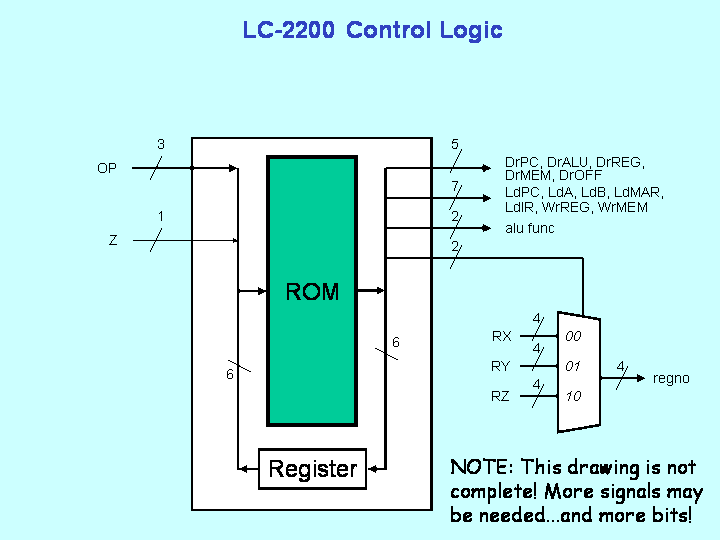

SM control units may be implemented in a number of ways:
Combinational logic combined with a state element such as a
register may be used. Quite common in practice are microcode
designs where the information for each state is stored in a ROM.
For this project, we suggest a simple version of the microcode
approach. Examine figure 2.

Figure 2: Single-ROM Microcontrol Unit
This approach combines a ROM with a register. Operation is simple. The current state is stored in a register as a number. The bits from this register are combined with opcode bits, other bits from the datapath (e.g., Z register) and all together these bits form an address. The contents of that address are bits that are used to specify all control signals to the datapath as well as the number of the next state. The new state gets stored at the end of the clock cycle.
Before getting down to specifics you need to determine the control scheme for the datapath. To do this, examine each instruction, one by one, and construct a finite state bubble diagram showing exactly what control signals will be set in each state. Also, determine what are the conditions necessary to pass from one state to the next. Experiment with the supplied datapath to make sure that your logic is sound.
Once the finite state bubble diagram is produced, the next step is to encode the contents of the Control Unit ROM with a tool we are providing. Then you must design and build (in Logisim) the Control Unit circuit which will contain one ROM, a MUX, and a state register. Your design will be better if it allows you to single step and insure that it is working properly. Finally, you will load the Control Unit's ROM with the output of the tool.
Here is a table defining the bits you should use for your control logic:
Note: The control signals listed here are ever so slightly different than those in the Bonus version, so if you decide to switch versions, make sure you account for that.
Input Address to State Machine ROM Bit 0 lower bit State 1 2 3 4 5 higher bit state 6 lower bit opcode 7 8 higher bit opcode 9 lower bit cc (feel free to set to 0) 10 higher bit cc (feel free to set to 0) 11 Z State Machine ROM Contents Bit 0 lower bit State 1 2 3 4 5 higher bit State 6 DrREG 7 DrMEM 8 DrALU 9 DrPC 10 DrOFF 11 LdPC 12 LdIR 13 LdMAR 14 LdA 15 LdB 16 LdZ 17 WrREG 18 WrMEM 19 SelPR 20 RegSelLo 21 RegSelHi 22 ALULo 23 ALUHi RegSelHi RegSelLo Select Register Field 0 0 RX 0 1 RY 1 0 RZ 1 1 Unused ALUHi ALULo ALU Function 0 0 ADD 0 1 NAND 1 0 A-B 1 1 A+1Back to Instructions